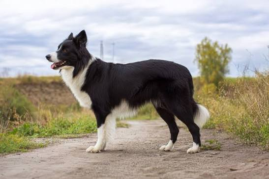
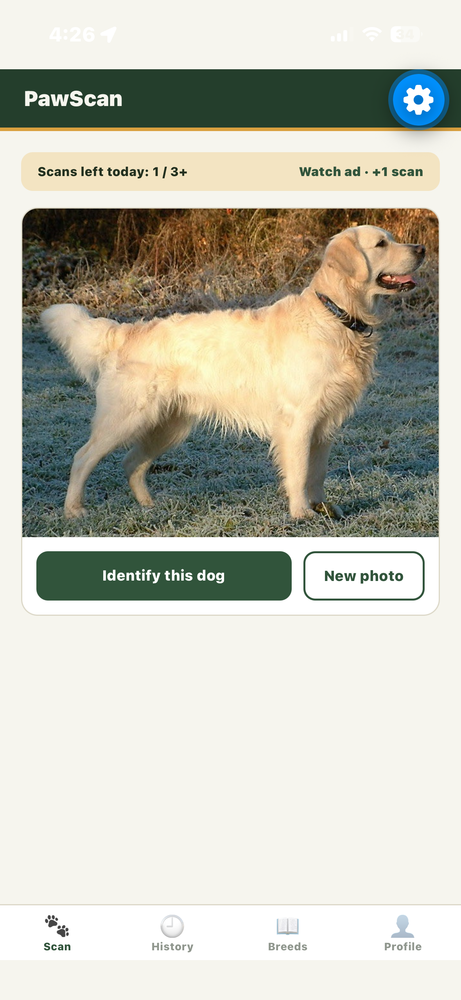
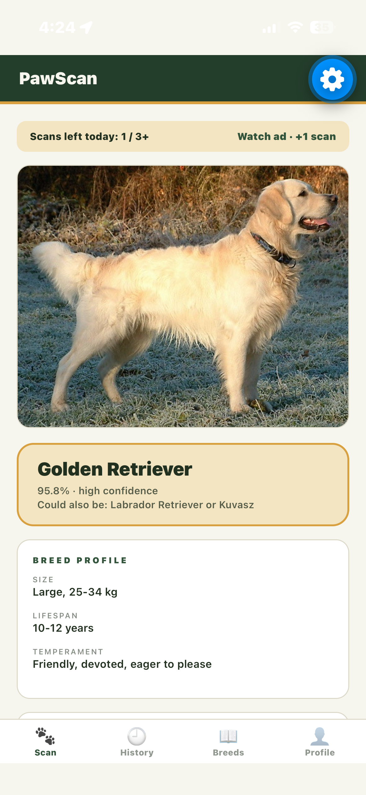
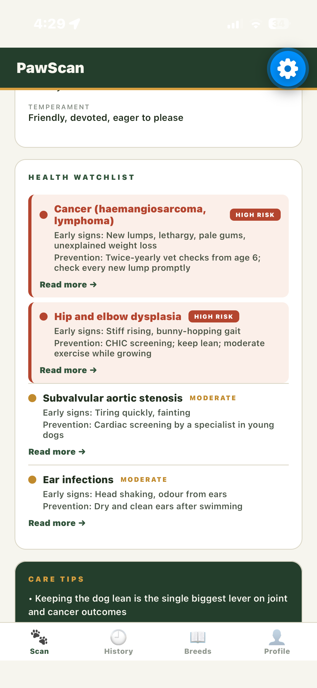
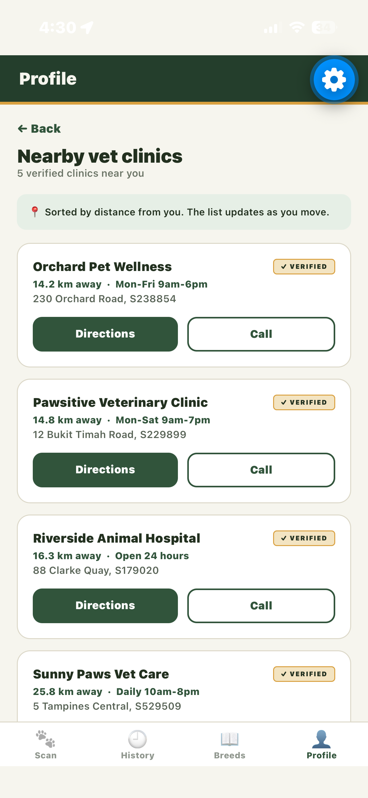

PawScan identifies a dog’s breed from a photo, shows the three most likely matches for mixed breeds, and flags health issues to watch for, so owners know when to talk to a vet.

Example result for illustration.
From photo to answer in three steps.
Use your phone camera, or upload a photo from your gallery if the dog won’t stay still.
Every result comes with a confidence score, which helps you read mixed-breed dogs.
Get a report on common hereditary issues for that breed, then find a vet nearby if needed.
Live camera scan or gallery upload, with breed predictions and confidence scores.
A breed-based risk report with a clear reminder to consult a real veterinarian.
Search breeds and read about temperament, lifespan, and care needs. Bookmark your favourites.
Look back at past scans and delete what you don’t want kept. Premium users can track a dog’s conditions over time.
Open a map of nearby clinics when a health issue is flagged. Clinics are verified before they are listed.
Report a wrong result and our moderators review it to keep the information accurate.
Start free. Upgrade for unlimited scans and cancel anytime.
| Feature | Free | Premium |
|---|---|---|
| Price | $0 | $4.90 per month |
| Scans | 3 per day | Unlimited |
| Breed encyclopaedia | Included | Included |
| Scan history | Included | Included |
| Bookmarks | Included | Included |
| Dog profiles with health tracking | Not included | Included |
| PDF vet report and CSV export | Not included | Included |
| Full condition articles | Not included | Included |
| Advertisements | Shown | None |
Billing would be handled by the platform app store. In our demo build, payment is simulated and no charge is made.
Clinics can register a business account, list their practice, keep the details up to date, and see how many referrals PawScan sends their way.




PawScan is our Final Year Project (CSIT321) at SIM, University of Wollongong. Group FYP-26-S3-04.
Important: PawScan gives general information and is not a medical diagnosis. Always consult a licensed veterinarian about your dog’s health.